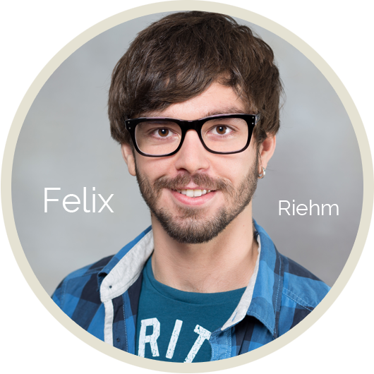
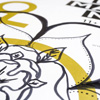
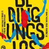
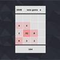
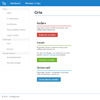
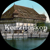
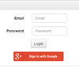
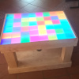
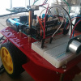

Über mich
Über mich
Ich bin ein offener und unkonventioneller Mensch, der gerne neue Dinge entdeckt. Mein Informatikstudium (B. Sc.) habe ich erfolgreich am schönen Bodensee in Konstanz absolviert. Meine Motivation für die Informatik habe ich immer aus dem Spass des logischen und analytischen Denkens und dem Anwenden an realen Arduino Projekten gewonnen.
In meiner Freizeit beschäftige ich mich viel mit Musik, indem ich Cajon, Klavier, Schlagzeug oder Gitarre spiele und eigene Lieder schreibe. Ich bin begeisterter Fan von Lyrical Dance und interessiere mich leidenschaftlich für das Theater.
Schulausbildung
| ab 2015 | Masterstudium Informatik, HTWG, Konstanz |
| 2011 - 2015 | Bachelorstudium Angewandte Informatik, Studienrichtung Medieninformatik, HTWG, Konstanz, Bachelor of Science |
| 2008 - 2011 | Technisches Gymnasium, Georg-Kerschensteiner-Schule, Müllheim, Allgemeine Hochschulreife |
| . . . | siehe vollständiger Lebenslauf |
Praktische Arbeiten
| 2015 | Bachelorarbeit bei der Firma TZM GmbH mit dem Thema: Konzeption, Design und Entwicklung eines standortbasierten Ticketsystems anhand dem Beispiel eines Klinikums |
| 2013 | Praktikum bei der Firma Hekatron GmbH mit dem Thema: Erstellung einer Software zur Steuerung einer Vorrichtung zur Prüfung von Brandmeldern auf Täuschungsgrößen |
| . . . | siehe vollständiger Lebenslauf |
Hochschul-Projekte

Theater Liebe macht Nass
Moosbrugger und Amann heißen die beiden mächtigen Familienclans, die das Leben im südbadischen Konstanz bestimmen und ihre Feindschaft seit mehr als 600 Jahren öffentlich austragen.
Anlässlich des zehnjährigen Geburtstags der Bodenseetherme Konstanz, lässt es sich der Clan der Amanns nicht nehmen ein philharmonisches Charitykonzert in der Therme zu veranstalten, um für ein Herzensprojekt zu werben: Ein Konzerthaus für Konstanz. Natürlich wollen die Amanns ein für alle Mal klar zu stellen, wer Macht und Einfluss in der altehrwürdigen Konzilstadt besitzt.
Klar, dass die Moosbrugger das nicht auf sich sitzen lassen können. Die gehen auf die Barrikaden und versuchen die Veranstaltung mit allem was ihnen zur Verfügung steht zu stören. Ihre Haltung zu einem Konzerthaus ist eindeutig: Wer braucht schon ein Konzerthaus - was in Konstanz wirklich fehlt, ist Wohnraum für alle.
Roman ein junger Moosbrugger und Julia eine Amanns, begegnen sich an diesem Charitykonzert in der Therme und haben keine Ahnung, wen sie da vor sich haben – verlieben sich unsterblich ineinander, nicht ahnend, dass die Fehde der beiden Konstanzer Familien stärker ist.

Theater Geschichten aus dem Jenseits
Eine Königin herrscht über Ihr Reich mit aller Härte. Sie möchte alles und jeden kontrollieren – selbst das Unkontrollierbare. Leider kann sie nicht über die Grenzen ihres Reiches blicken, denn dort herrscht ihr alter Rivale, der Drache. Also was tun?
Klar, man sucht sich die 7 schneidigsten Helden des Reiches, bietet ihnen Gold und Silber, drückt ihnen die gefährlichste Waffe überhaupt in die Hände und hofft auf Erfolg.
Gesagt, getan – die Sieben sind schnell überzeugt und treten die gefährliche Suche ins Jenseits an. Dort kommt jedoch alles anders als erwartet und das Instrument, mit dem man ins Jenseits blicken kann, entpuppt sich als tödliche Gefahr.


Skandinavische Chormusik
Etablierung des Chors, zunächst mit einem kleineren Projekt, bei dem zwei bis drei Werke bis zur Aufführungsreife einstudiert werden. Im Semesterprogramm „Nordic Voices“ unternehmen wir einen Streifzug durch die verschiedensten Stilepochen der skandinavischen A Capella Chorliteratur - von Barock bis Neue Musik/Jazz. Wir lernen Komponisten wie Grieg, Nystedt, Söderman oder Lindberg kennen, die hier (zu unrecht!) kaum bekannt sind. Die wöchentlichen Proben beginnen mit regelmäßigen Chor-Warmups, Improvisationsübungen, Stimmbildung und Training an den Stücken. Ziel ist es, verschiedene Stile und Epochen einer etwas anderen Kultur kennenzulernen, dabei die eigene Stimme zu trainieren und vor allem Spaß beim gemeinsamen Singen zu haben!



Theater Bedingungslos
Im Ensemble als Schauspieler und Musiker
Volles Semester, 5 Aufführungen
Sita ist eine wunderschöne Prinzessin. Rama ist ein toller Hecht (auch wenn sein Name das vielleicht nicht grade nahe legt) und Ravana ist der Dämonenfürst. Alle wollen Sita, aber nur Rama besteht die Probe. Dummerweise werden sie nicht König und Königin –Intrige, Intrige- sondern müssen in den Wald ziehen. Das findet Sita nich ganz so dolle, also nutzt unser Dämon seine Chance und nimmt sie mit auf seine Insel. Rama findet das ganz und gar nich cool: Showdown mit Explosionen und Affen und so.


Theater Ruhig Blut
Es sind die Abgründe, für die sich das Ensamble in „RUHIG BLUT“ interessieren – denn diese Abgründe funktionieren wie eine Lupe: Man erkennt Dinge, die einem vorher verschlossen blieben, alles wird schärfer. Was ist das also für ein Hochschulsystem? Wie fühlt sich ein Prüfungsausschussvorsitzender, wenn er einem Studenten nicht mehr erlauben kann, weiter zu studieren? Was sagt ein Psychologe dazu? Wie hält man sich wach? UND Was passiert, wenn da plötzlich die Phantasie mit einem durchgeht und eine Waffe ins Spiel kommt?


Software-Projekte

Webapp 2048
2048 ist ein kleines Spiel das mit dem Play Framework als Webapp realisiert wurde. Neben der Browser Version kann eine Desktop Version ausgeführt werden. Beide Versionen laufen synchron. Das bedeutet ändert man bei der Browser Variante etwas, wird das globale Spiel-Model geändert und somit ändert sich auch die Desktop Version und umgekehrt. Realisiert wurde dies mit Websockets und der MVC Architekrur. Die Oberfläche des Dekstop Version wurde wie die Browser Version mit CSS gestaltet und die Animationen mit JQuery erstellt. Die Browser Version wurde auf Heroku bereitgestellt. GitHub

Webseite und App für ein Ticketsystem
Im Rahmen der Bachelorarbeit wurde eine Webseite und eine mobile App für ein ortsbasierendes Ticketsystem entwickelt. Die Webseite wurde mit asp.net MVC erstellt - eine ähnlich Technologie wie das Play Framework. Die App und die Webseite kommunizieren mit HTTP-Requests über eine Web API mit selbstentworfenen Webservices, die mit einer SQL-Datenbank interagieren. Die Anforderungen des Systems sind anahnd einer Analyse, einer vorhandenen Projektarbeit der Hochschule Esslingen mit dem örtlichen Klinikum und einer Kreativrunde mit dem Unternehmen TZM entstanden.

Designentwurf einer Konzil App
Zum 600. Jubiläum des Konstanzer Konzils suchte die Stadt nach einem App-Entwurf für mobile devices, um für die folgenden 4 Jahren die Austellungen, Festspiele und andere Aktivitäten begleiten zu können. Die App wurde mittels Einzelsceens ausgearbeitet und vorgestellt. Die Einzelsceens verdeutlichen den den Ablauf und das Aussehen der App. Die Kernbotschaft lautete "Jan Hus näher bringen". Als Grundlage für die Entwicklung des Konzepts bzw. der Gestaltung wurde ein Creative Brief geschrieben. Er enthält Informationen über die Zielperson, die Aufgabe selbst oder auch den Zeitplan.

Browserspiel Schiffe versenken
Für das Erlernen von Ajax, Websockets, JSON und der Loginprozess für Benutzer wurde mit Bootstrap Schiffe versenken realisiert und auf Heroku bereitgestellt. Teil der Arbeit war auch die Einführung einer Austauschstudentin aus Rumänien in die Themantik.
Arduino-Projekte

RetroDiscoTable
Der RetroDiscoTable ist ein Tisch dessen Oberfläche aus einer Fläche mit 48 Kacheln und einem im unteren Bereich verbauten Lautsprecher besteht. Die Kacheln besitzen 3 RGB-LEDs und können individuell angesteuert werden. Die Ansteuerung erfolgt über eine Winows Universal App, die für Desktop PCs, Tablets und Smartphones optimiert wurde. Die Kommunikation der App zu dem verbauten Arduino Mega im Tisch geschieht über Bluetooth. Lieder und Töne sind auf einer SD-Karte gespeichert. Mit der App ist es möglich auf dem Tisch verschiedene automatisierte Modi abzuspielen, manuell die Farbe der einzelnen Kacheln zu ändern, Snake und Memory zu spielen und Lieder abzuspielen. Es exestieren zwei Versionen der App: Die erste Version ist in C# programmiert und sendet nur die Start-Befehle zum Tisch der die Modi-Logik enthält. Die zweite Version ist in F# programmiert und enthält die Modi-Logik. Der Tisch empfängt nur LED Ansteuerungsbefehle.



Motuino
Der Motuino ist ein kleines Fahzeug mit zwei separat steuerbaren Rädern an den Seiten und einem Stützrad vorne. Mit einer beliebigen Bluetoothsteuerung-App aus einem Mobile Appstore kann in alle Himmelsrichtungen gesteuert werden. Der verbaute Arduino Uno nimmt Stringbefehle über Bluetooth entegen und reagiert entsprechend. Mit dem verbauten Abstandssensor wird Hindernissen automatisch ausgewichen. Energie erhält der Motuino über 4 AAA Baterien die auf dem hinteren Teil des Fahrzeugs angebracht sind. Damit die Ansteuerung der Motren über den Arduino Uno einfacher ist, wird ein Motor Shield verwendet.

Kontakt
Adresse
Konstanz 78467, BW
mail@felixriehm.de
Tel.: 015253873980

{kind=link}
{kind=link}
{kind=link}
{kind=link}
{kind=link}
{kind=link}
{kind=link}
{kind=link}
{kind=link}
{kind=link}
{kind=link}
{kind=link}
{kind=link}
{kind=link}
{kind=link}
{kind=link}
{kind=link}
{kind=link}
{kind=link}
{kind=link}
{kind=link}
{kind=link}
{kind=link}
{kind=link}
{kind=link}
{kind=link}
{kind=link}
{kind=link}
{kind=link}
{kind=link}
{kind=link}
{kind=link}
{kind=link}
{kind=link}
{kind=link}
{kind=link}
{kind=link}